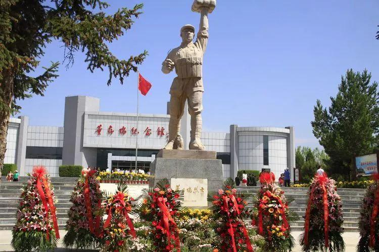
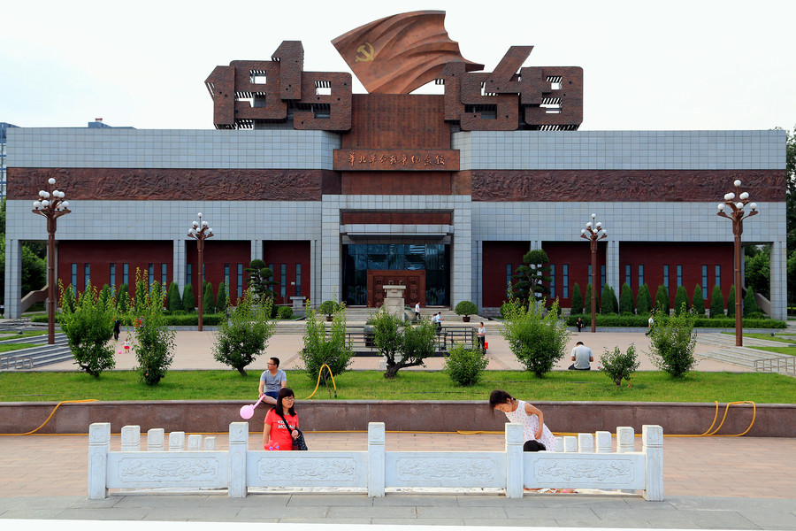
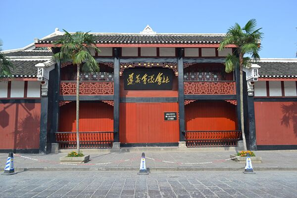

|  | 为纪念董存瑞烈士的英雄事迹，英雄的家乡河北省怀来县和牺牲地隆化县分别修建了两座董存瑞烈士纪念馆。 怀来县的董存瑞烈士纪念馆通常被称为旧馆，建筑面积8800平方米。 隆化县的董存瑞烈士陵园旁，重建的董存瑞烈士纪念馆新馆分为接待区、瞻仰烈士纪念广场、展览区和碑林区四部分，总投资500万元。 |
| 董存瑞烈士纪念馆 | |
| 石家庄华北军区烈士陵园是为了纪念牺牲在华北大地上的革命烈士而修建的，是我国兴建早、规模大、建筑规格高的著名烈士陵园之一。国际主义战士白求恩、柯棣华大夫，回民支队司令员——“民族英雄”马本斋、“子弟兵母亲”戎冠秀等著名烈士均安葬或安放在这里。 陵园系统地整合了园区红色人文景观和绿色自然景观，形成了一条南北景观主轴，三条东西景观次轴景观格局，突出“名人、名景、名树、名花、名草”的设计理念，使华北军区烈士陵园成为集纪念瞻仰、文化教育、生态旅游于一体的多功能综合性园区。 |  |
| 华北革命战争纪念馆 | |
|  | 遵义会议纪念馆位于贵州省遵义市红花岗区子尹路96号，总占地面积40000多平方米，总建筑面积18457平方米，展室面积6083平方米。 遵义会议纪念馆是为纪念遵义会议而建立的，是新中国成立后最早建立的21个革命纪念馆之一，于1955年10月开放。遵义会议纪念馆由遵义会议会址等十一个纪念场馆组成，1964年11月，毛泽东主席为纪念馆题写了“遵义会议会址”六个大字。截至2008年11月28日，该馆馆藏文物1551件。其中原物726件，复制品667件，仿制品158件。截至2019年5月14日，遵义会议纪念馆新征集到2000多件革命文物及历史资料，纪念馆收藏的革命文物中，有11件国家一级文物及30件国家二、三级文物。 2008年5月16日，遵义会议纪念馆列入国家文物局首批国家一级博物馆。2017年1月，国家发改委网站公布《全国红色旅游经典景区名录》，遵义会议纪念馆入选中国红色旅游经典景区名录。2017年12月，遵义会议纪念馆入选第一批中国中小学生研学实践教育基地。 |
| 遵义会议纪念馆 | |